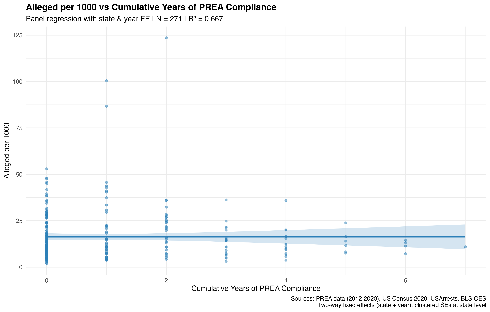
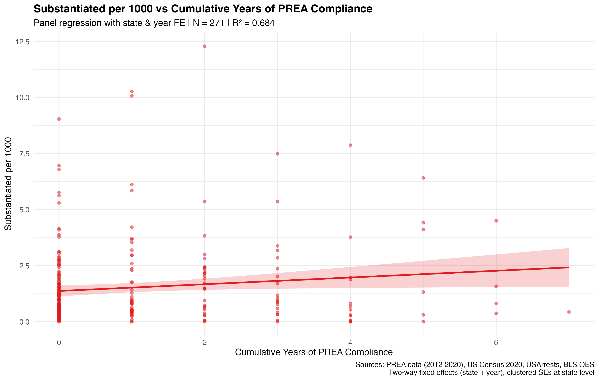
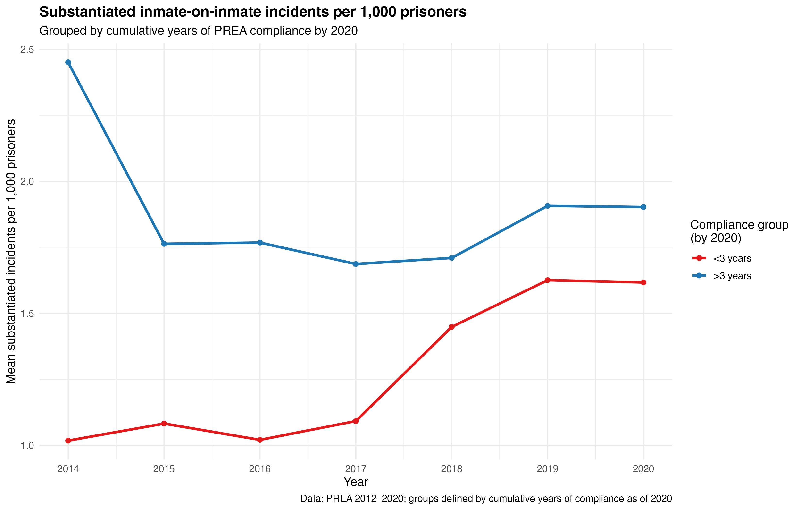
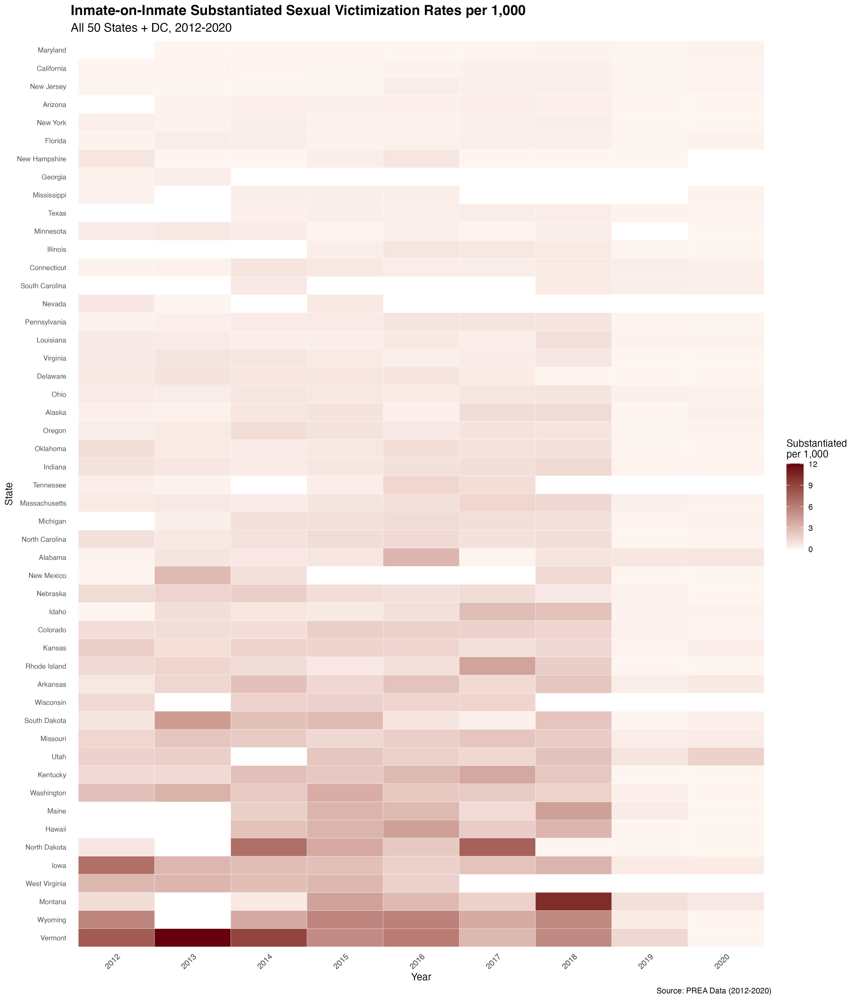
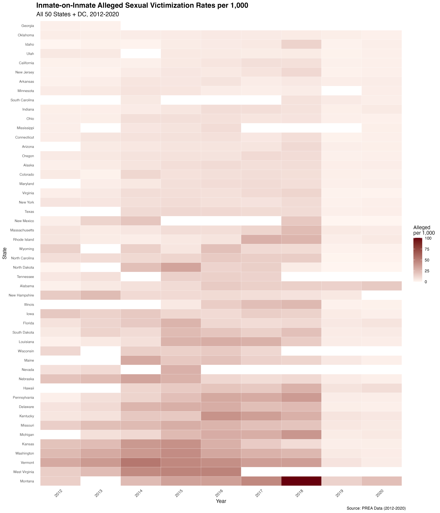

At a glance
Interactive heatmaps
Hover states and years to read exact rates. Exported from 24_create_alleged_heatmap_2012_2020.R and 25_create_substantiated_heatmap_2012_2020.R.
Two-way fixed effects (cumulative compliance)
Specification: state and year FE; clustered SEs at state; controls for population (millions), incarceration rate, staff per 1,000 inmates, and violent crime rate. Output from 14_regress_with_additional_covariates.R.
| Variable | Alleged / 1,000 | Substantiated / 1,000 |
|---|---|---|
| Cumulative years PREA compliance | −0.734 (1.027), p = 0.476 | −0.121 (0.104), p = 0.247 |
| State population (millions) | +0.603, p = 0.688 | −0.684, p < 0.001 |
| Violent crime rate (per 100k) | −0.003, p = 0.941 | −0.009, p = 0.044 |
| Incarceration rate and staff per 1,000: not significant in these models. | ||
Instrumental variables (EverTreated)
Endogenous regressor: cumulative years of compliance, instrumented by whether the state has ever been PREA-compliant through year t. Table shows second-stage coefficients on instrumented compliance for outcomes measured at t, t+1, and t−1. Baseline first stage is strong (F ≈ 24); the lag-outcome specification has a much weaker first stage (F ≈ 6.7)—interpret the significant lag alleged estimate with caution.
| Outcome timing | Alleged (coef, SE, p) | Substantiated (coef, SE, p) |
|---|---|---|
| At t | 3.975 (3.147), p = 0.208 | 0.024 (0.320), p = 0.941 |
| At t+1 | 2.921 (3.804), p = 0.444 | 0.273 (0.477), p = 0.567 |
| At t−1 (weak first stage) | 11.968 (5.058), p = 0.019 | 0.386 (0.648), p = 0.552 |
Key static figures
Click an image to enlarge. Files live under figures/ (regenerate from the numbered R scripts).





Publishing on GitHub Pages: this repo ignores most HTML and figures/ by default.
To deploy, add exceptions in .gitignore (see comments there) or run
git add -f index.html figures/… for the paths this page uses, then enable Pages from the
main branch.